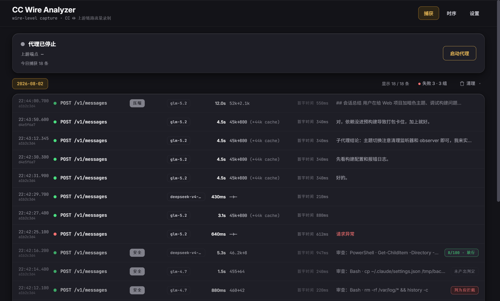
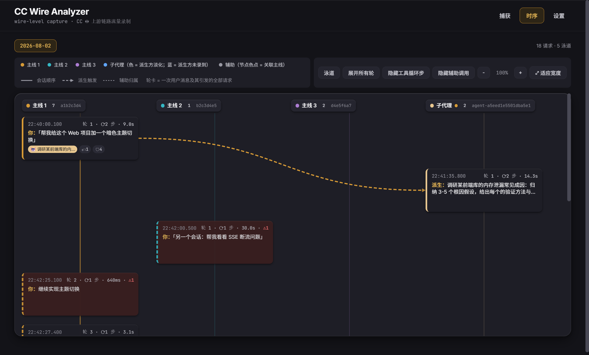
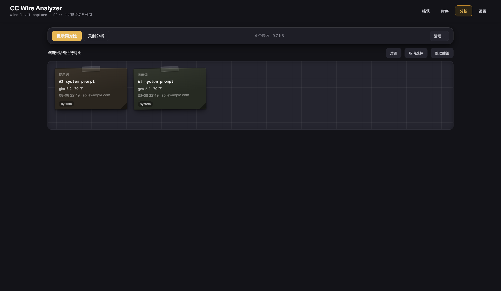

实际发送的提示词
查看完整 system prompt、注入的 reminder，以及标题生成、上下文压缩和安全审查提示词。
本地 wire 级可观测性
Claude Code 展示的是它自己的会话视图。CC Wire Analyzer 录制尚未被它事后加工的完整 HTTP 请求与响应：系统提示词、工具定义、隐藏调用、SSE 时序、上游错误和精确 Token 用量。

缺失的那一层
wire 是 Claude Code 与模型真实对话存在的地方。录一次后，你可以在 GUI 里看，也可以让另一个 agent 通过同一套 HTTP API 自己查询。
查看完整 system prompt、注入的 reminder，以及标题生成、上下文压缩和安全审查提示词。
检查每份工具 Schema、派生子代理的 prompt，以及随后发生的整条请求链。
沿流式时序查看每个事件，并读到 Claude Code 自己的会话视图没有展示的失败。
GUI 与开放的本地 HTTP API 共享同一真源，agent 可以自行搜索、交叉分析和诊断。
CC 没展示的一次失败
界面没有任何错误，但失败的辅助请求仍然存在于 wire 上，而且已经带着上游给出的诊断。
GET /api/diagnose/errors output_config.effort 'max' is not supported when thinking is disabled on this model. settings.json effortLevel: low environment CLAUDE_CODE_EFFORT_LEVEL: max 根因：环境变量胜出 → 请求参数互相矛盾
三种互补视图
CC Wire Analyzer 不取代 Claude Code 日志或遥测。它补上两者都无法表达的一层：与上游端点之间未经加工的原始交互。
实际发送的提示词、Header、Body、SSE 分块、上游错误与原始用量。
会话结构、本地元数据，以及被 Claude Code 处理后的对话。
跨会话的延迟、成本、Token 与运行指标。


从设计上保持本地
请求仍然发往 Claude Code 原本就在使用的上游。应用只在本机录制、脱敏凭据 Header，并只改一个设置字段把流量导向自己。
纯 JSONL 写入 ~/.cc-wire-analyzer/，没有账号、云存储和遥测。
只 patch ANTHROPIC_BASE_URL，停止或退出时从备份恢复。
Authorization 等 Header 不会原样保存；消息 Body 则保持原文，因为那正是需要检查的证据。
可选 AI 分析与更新检查都只在你点击时运行，使用的端点也明确展示给你。